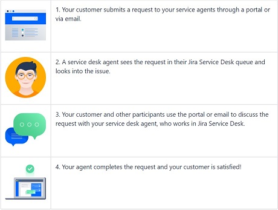

Jira Service Desk¶
Introduction¶
Jira Service Desk is simply modern service desk software. It brings more structure to your work, gives you increased visibility into what your team is up to, and helps your team members get more done, so you can deliver better service. It is used primarily:
- By teams who receive incoming issues/requests from other teams/customers.
- Is designed specifically for end-users to submit tickets to a help desk team.
Why use Jira Service Desk¶
Jira Service Desk integrates directly with Jira and brings you all the power and productivity of Jira to your service desk teams in the below ways:
-
An intuitive, customer-centered interface - It lets you craft easy-to-use forms for your users.
- Create clean and simple customer portals with clear calls to action.
- Build templates for users to enter all the details you need.
- Display contextual information, re-map statuses, and hide fields your users don’t need.
-
A powerful service level agreement (SLA) engine - Jira Service Desk manages your service level agreement (SLA) commitments out of the box:
- Set up advanced SLA metrics with complex start, pause, and stop criteria.
- Ensure your IT teams keep priorities front of mind with clear countdown and color codes for every request
- Let Jira automatically apply relevant targets on each new request with its powerful rules engine.
-
Customizable team queues - Manual triage and prioritization of requests is a thing of the past:
- Set up queues of requests automatically shared across all IT team members
- Improve the visibility and alignment of your IT teams with live updating queues
- Use the power of JQL to customize the ordering of the requests within a queue
-
Real-time reports and analytics - "That which gets measured, gets improved". With Jira Service Desk, you can assess performance and improve your IT team’s efficiency:
- Get insights out of the box with key volume and time-based reports.
- Assess progress and identify bottlenecks in real time
- Apply SLA metrics retroactively to your current Jira data to observe trends
The difference between Jira and Jira Service Desk¶
- Jira, is for internal teams to work together on issues/projects, whereas, Jira Service Desk. lets the end users submit tickets which can be tracked by the service desk team.
- Jira, can be very technical for people who don't use it everyday, whereas, Jira Service Desk is quick, and easy due to it's simple interface.
Jira Service Desk Features¶
Once you have navigated to your service desk, you’ll find the sidebar, which has helpful features which you may want to use:
- Queues
Queues are where your agents work on customer requests. As a project administrator, you’ll set up and configure queues to triage requests to the right service desk agents. Your agents will then view and work on these requests from your queues.
- Reports
You can use reports to visualize trends in your service desk. As a project administrator, you can also set up custom reports to discover new trends not displayed by the default reports.
- Channels
Channels are where you can find the ways customers send you requests. Here, you can get details for your email, help center, and widget channels.
- Project settings
Project settings are where you can configure your service desk. Here, you can set up request types, link your service desk to an email account, manage users, and more.
Service Desk Project¶
You can create projects in Jira Service Desk. Projects are service desks that provide help to customers. You can create multiple projects to give each service team in your organization their own service desk. For example, you might have a Finance, a HR, Facilities, IT or Legal service desk project.
Customers can access every service desk project that you’ve given them permission to from the help center—an online place for them to request help.
Before you create a service desk project, you choose a project template for it. After you sign up for Jira Service Desk, you’re asked to choose a template for your first service desk project. Depending on your organization’s needs, we start your project with reports, request types and other tools. You can always configure your project later.
User types and Roles¶
Primarily there are two licensed roles: administrators and agents. The administrator sets up and configures service desk projects. The agent works in these projects.
In this manual, we will focus on the agent role.
Agents¶
The Service Desk Team Members who work on customer requests are termed as "Agents". An agent can:
- View the customer portal, queues, reports and SLA metrics for a project
- Add, edit, and delete customer-facing and internal comments on issues
- Add customers to a project
- Read knowledge base content
Accessing Service Desk Projects¶
- Login to your Jira account.
- Go to Projects.
- Choose the Service Desk Project.

How a Service Desk works¶
Here's how your customers and service desk agents work together to resolve a request:

- The customer raises a request through the portal provided.
- The request is added to the project service desk queue.
- Initially it is assigned to the Project Manager, who decides who will work and resolve the ticket.